How the chairman, the treasurer and the electrician work in the system, and the rules it calculates by: tariffs, readings, charges, losses, water — with worked examples.
Nadel keeps the cooperative's records: who the members are, which plots they own, what is charged and at which tariffs, how much electricity and water was used. Charges, payments, invoices and the map come next.
Everyone signs in with their own account. What a person sees and may do depends on their roles, and roles are made of permissions (chapter 3). Every cooperative has three base roles:
| Role | May do |
|---|---|
| Chairman | Everything: members, roles, plots, owners, tariffs, meters, readings, import, settings, audit log. The chairman's rights cannot be reduced, and a cooperative always keeps at least one chairman. |
| Treasurer | Views members, plots, tariffs, meters and the audit log. Changes nothing until the chairman adds permissions. |
| Member | Own data only: own plots and their tariffs, own meters, submitting readings. |
The chairman can create custom roles. For example the role "Electrician" has only two permissions, "View meters" and "Enter readings"; a person with it sees only "Readings" and "Meters" in the menu.
For now the sign-in account (email and password) is created by the platform administrator. Self sign-up and email invitations come later.
At the top right: the language switch УКР / ENG and the theme System / Light / Dark. The choice is remembered in this browser. The interface always shows exactly one language: with English selected, every name, hint and message is English.
At the top left is your cooperative's name, below it the menu. On a phone the menu hides behind the "Menu" button.
"Members" lists every member, with search by last name, phone or email.
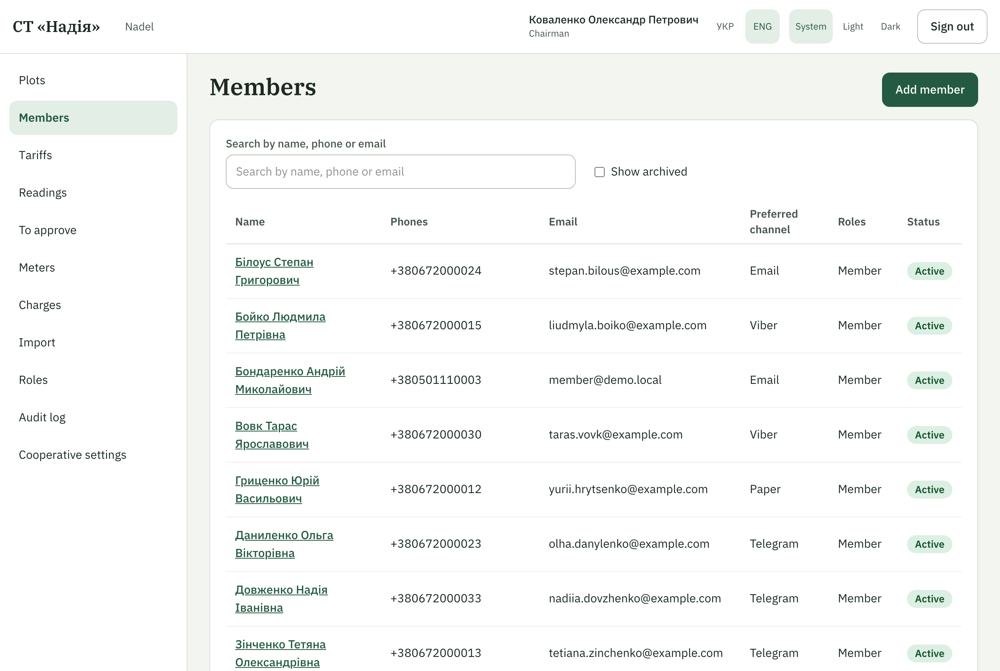
0XXXXXXXXX is stored as +380XXXXXXXXX.
Notes are for working information about a member: how best to reach them, arrangements, relatives' contacts. Only people with "View members" see them. The system has no fields for tax numbers (РНОКПП), passport data or dates of birth — the cooperative does not need them for its records.
Contacts, roles, owned plots and notes. Notes are visible only to people with "View members".
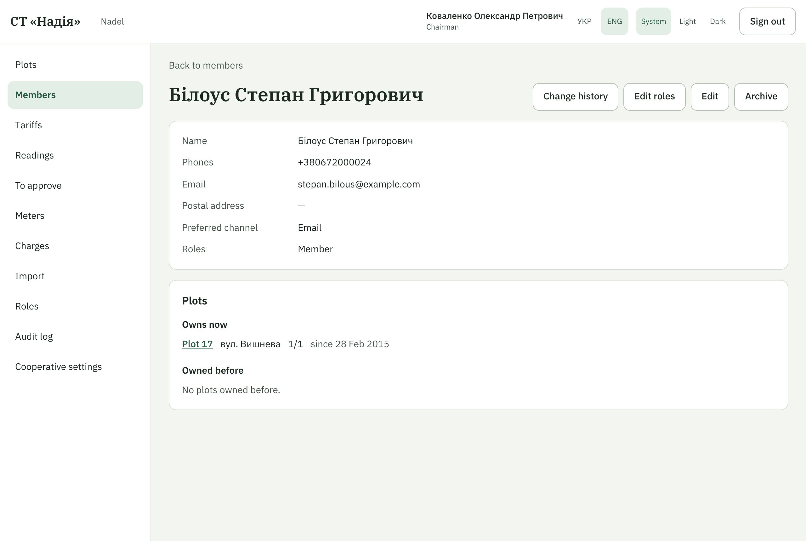
A member is archived, not deleted: hidden from the list (visible with "Show archived"), unable to sign in, history kept. "Restore" brings them back. A current plot owner cannot be archived until the plot changes hands, nor the last chairman until another is appointed.
In "Roles" the chairman (or anyone with "Manage roles") decides who may do what.
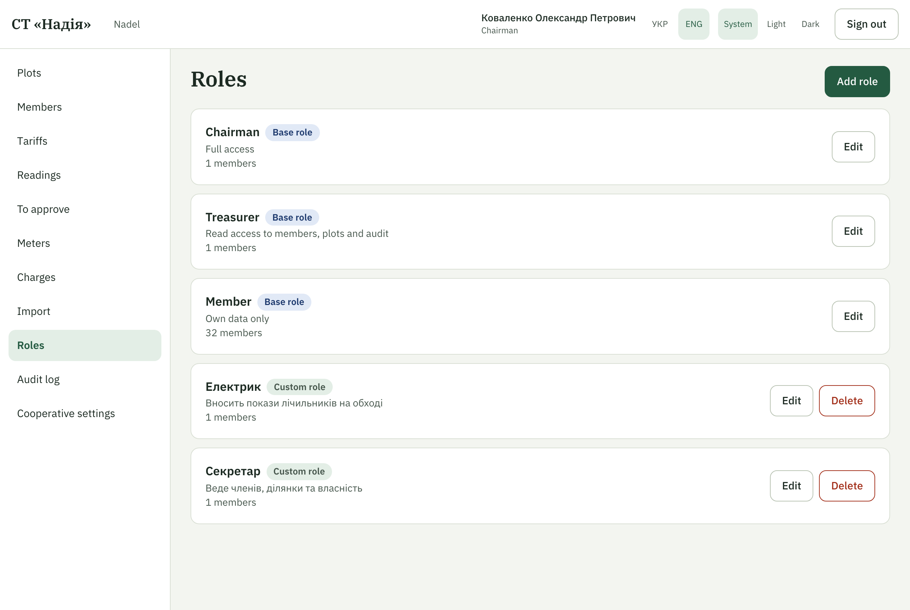
| Permission | Allows |
|---|---|
| View / edit members | See all members and contacts; add, change, archive |
| Manage roles | Create roles, change permissions, assign roles |
| View / edit plots | See every plot in detail; add, change, archive |
| Edit ownership | Add, change and correct owners |
| Run import | Upload data from Excel |
| Manage settings | Change the cooperative settings |
| View / manage tariffs | See tariffs; create charge types, tariffs and versions |
| View / manage meters | See the register and the tree; register, replace, remove meters |
| Enter readings | Enter, correct and delete readings (the electrician's round) |
| Approve readings | Approve or reject readings submitted by members |
| View audit log | Read the audit log |
"Plots" is the register of every plot, with search by number, street or cadastral number and filters by kind and status.
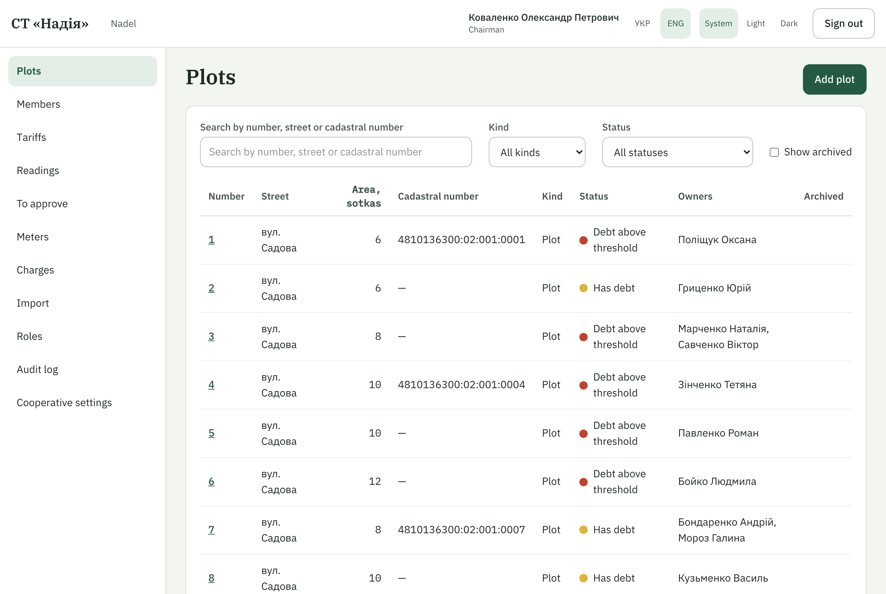
12, 12a, R-1. Natural
order: 2 before 10, 12a after 12.
NNNNNNNNNN:NN:NNN:NNNN.| Colour | Meaning |
|---|---|
| Green | No debt |
| Yellow | Has a debt |
| Red | Debt over the threshold (amount or age set by the chairman) |
| Grey | A plot without an owner, or common land |
Until charges exist, a plot with an owner is green. Colours start to show debts with the charges (chapter 17).
All the plot's data, owners with history, tariffs for a chosen month, meters.
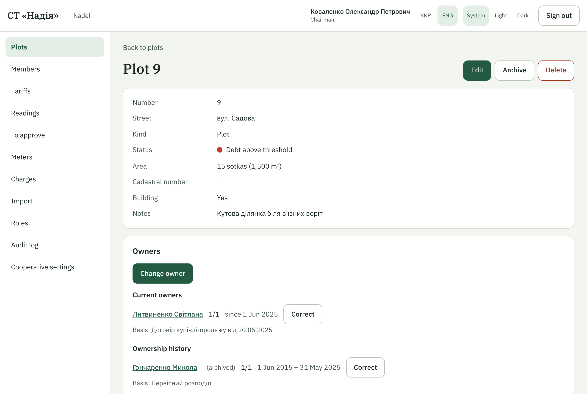
"Archive" hides a plot from the list and keeps its history. Only a plot created by mistake that never had an owner can be deleted.
Owners are kept on the plot card. A plot can have several co-owners with shares (1/2,
1/3); the shares always add up to one. One member may own several plots, each with its
own account.
The previous owners stay in the history up to the day before. A debt belongs to the plot, not the person: after a sale it stays on the plot.
A wrong share, date or person in a record is fixed with "Correct" next to the record. The old values stay in the audit log. Ownership records are never deleted.
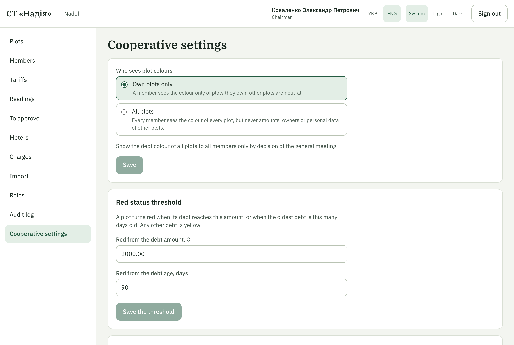
Neighbours know whose plot is whose, so the colour effectively names the debtor. Switch to "All plots" only after a general meeting decision. The change is written to the audit log.
The meter tree is opened from here too — see chapter 9.
Below the colour choice: the red status threshold, how losses are charged, the split of common consumers and the water supply of plots. They are described in chapters 17–19.
Instead of typing the cooperative in by hand, plots, members, owners and meters can be loaded from one Excel file.
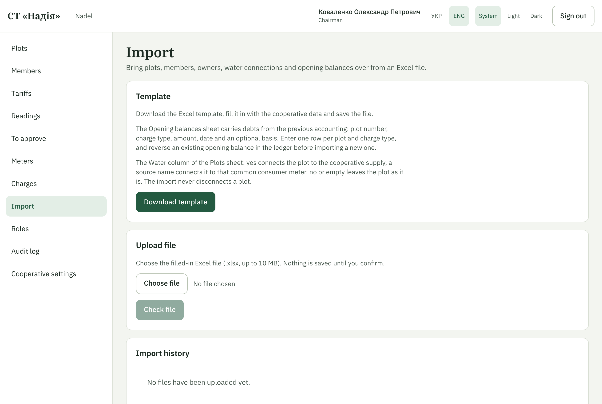
DD.MM.YYYY, area in sotkas or m², shares as
1/2.
.xlsx up to 10 MB, up to 2,000 plots and 3,000 members. A check is valid for 30
minutes.
Two additions: the Opening balances sheet (plot, charge type, amount, date, basis; one row per plot and charge type; amounts with at most two decimals) and the Water column of the Plots sheet ("yes" connects to the cooperative supply, any other text names a well; "no" or empty changes nothing). Importing the same file again books nothing twice.
Here the chairman describes what the cooperative charges for and how much. The charges themselves come later (chapter 17), but every plot card already shows what the plot will be charged.
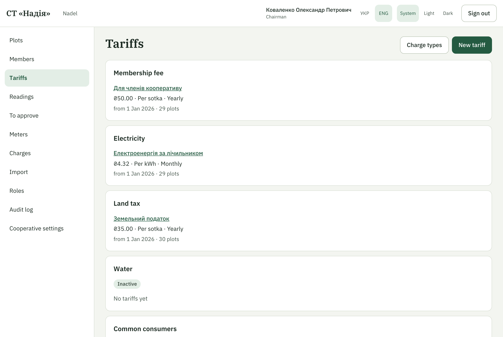
The "Charge types" button. Every cooperative starts with membership fee, electricity, land tax and water (inactive until there are water meters). Add your own, such as "Road repair", rename, reorder, archive.
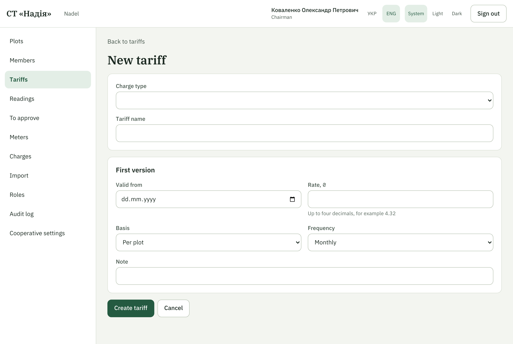
| Basis | Example |
|---|---|
| Per plot | 300 ₴ per plot per quarter |
| Per sotka | Membership fee 50 ₴ per sotka per year |
| Per kWh | Electricity 4.32 ₴ per kWh, by meter readings |
| Per m³ | Water, by water meter readings |
| Fixed one-time amount | Special-purpose fee 1,200 ₴ with a due date |
Frequency: monthly, quarterly, yearly or one-off. The cooperative bills monthly, so a yearly tariff is divided by 12 and a quarterly one by 3.
Membership fee 50 ₴ per sotka per year, a 6-sotka plot: 50 × 6 / 12 = 25.00 ₴ per month.
A rate may have up to four decimals (for example 1.4532 ₴ per m² for land tax); amounts are rounded to kopecks only at the end. A rate is shown without trailing zeros: 50.00 ₴, not 50.0000 ₴.
A tariff is changed not by editing but with a new version and the date it starts ("New version"). The version history is on the tariff card. A version starting in the past shows a warning that past charges will be recalculated.
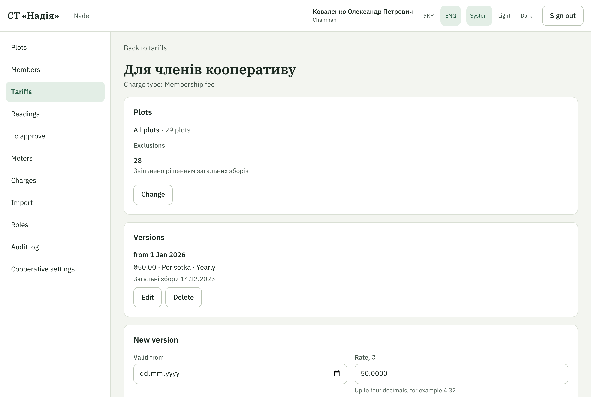
A mistake in a version can be fixed ("Edit") or the version deleted while no charge uses it. The only version of a tariff cannot be deleted; archive the tariff instead.
"Meters" is the register of every meter in the cooperative. Each one has a resource icon: a lightning bolt for electricity, a drop for water.
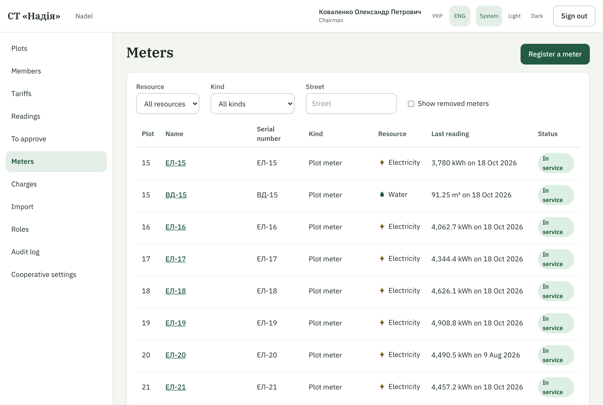
A cooperative may have any number of substations, quarter meters and wells — the system sets no limit.
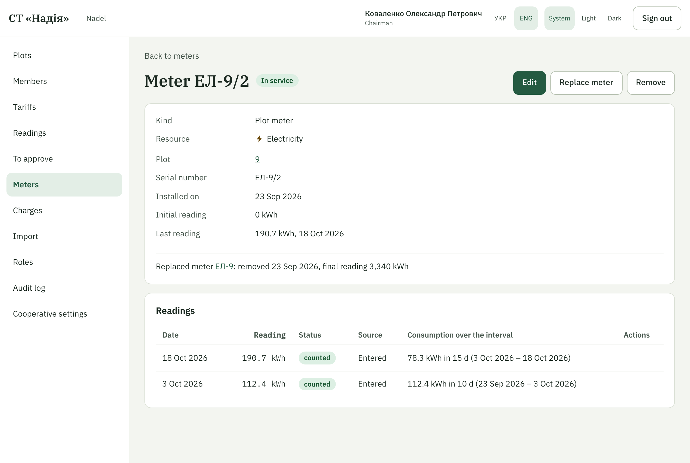
"Cooperative settings" → "Meter tree". The chairman builds the tree: substations, below them quarter meters, common consumers and plot meters. "Move" puts a meter under another node from a given date; earlier periods use the old tree.
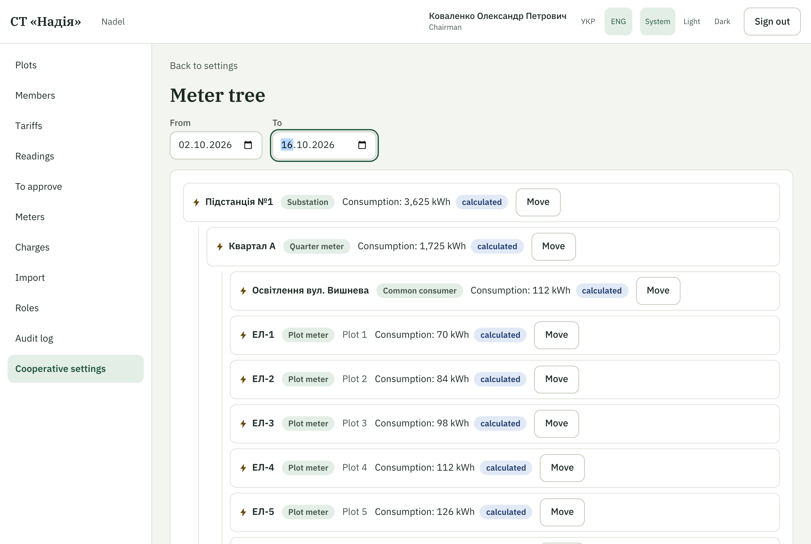
Choose a range "from … to …" and every meter shows its consumption for it. With no reading on a range boundary, the system estimates the value in proportion to the days between the neighbouring readings and marks it "calculated". With no reading after the range end yet it says "no reading after …".
Readings are not tied to months: the electrician may come after a month, after three or after a few days. A reading is a meter's value on a date. Consumption is counted between neighbouring readings.
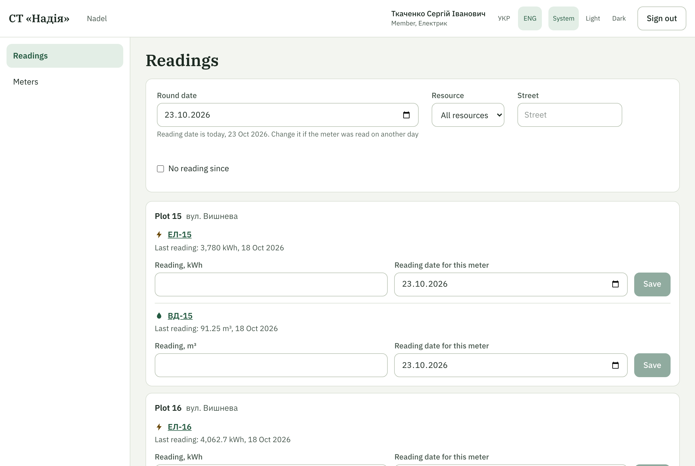
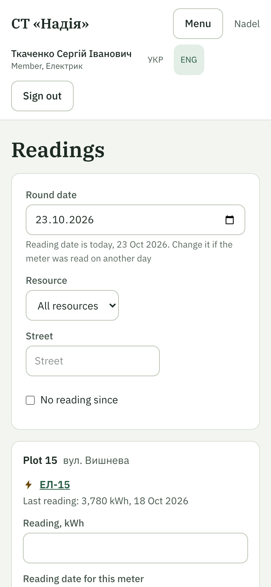
A member can submit the reading of their own meter from their account. It waits in "To approve": "Approve" or "Reject" with a reason the owner sees. A reading that is not approved is never used.
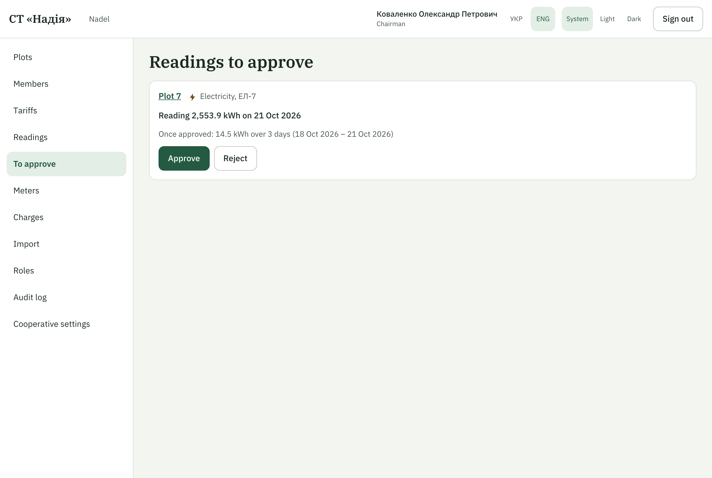
On the meter card every reading can be corrected or deleted while no charge uses it. Once charged, a correction will go through recalculation (chapter 20).
Every board action is recorded: who, when, what changed — with old and new values. Filters by person, action, object and date.
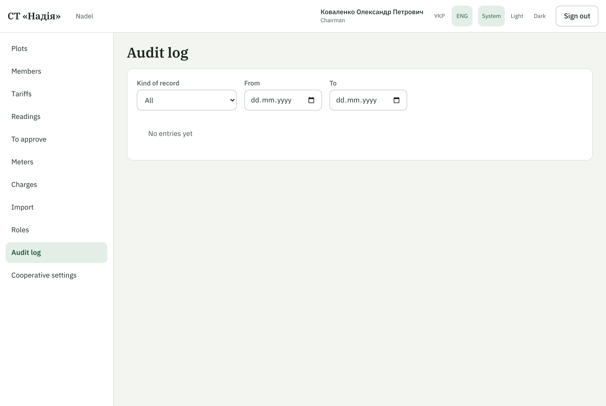
Log entries are never changed or deleted. Data loaded by demo scripts does not appear in the log — only actions of people in the system.
After signing in a member sees "My account": own plots, what they will be charged by the tariffs, own meters with their readings and "Submit a reading".
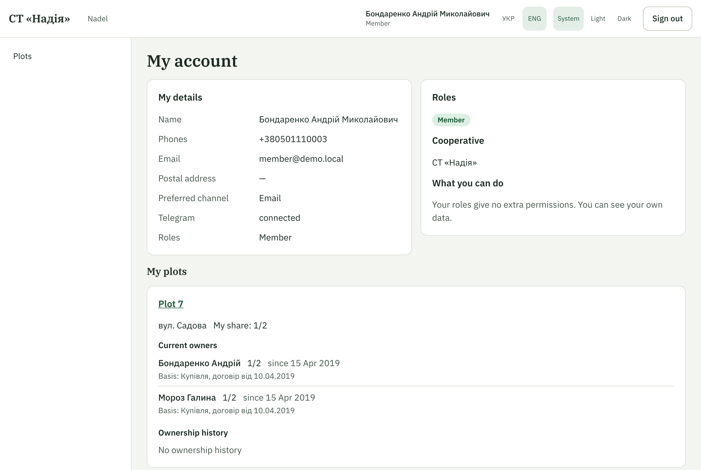
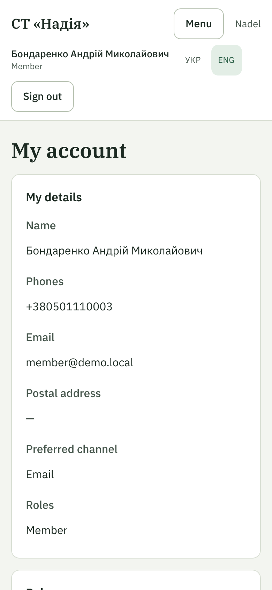
A member never sees other plots' amounts, owners or personal data. Other plots' colours only when the chairman chose "All plots" (chapter 6).
For each of their plots the member sees the debt per charge type and every charge with its calculation, read-only. See chapter 17.
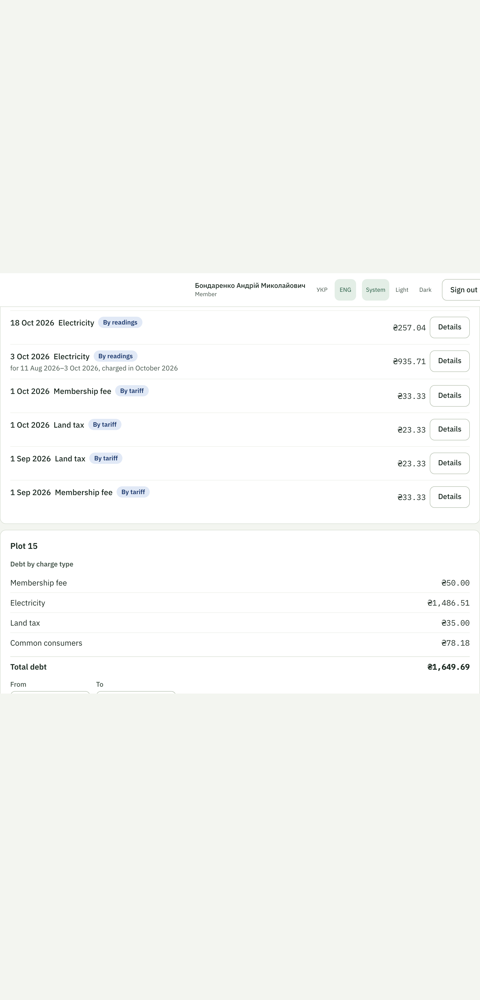
The rules the system calculates amounts by, and why they are what they are — with worked examples. Chapters marked "planned" describe the next capabilities as they have already been decided.
A rate of 0.05 ₴ for 15 + 15 days of a 30-day month is exactly 0.05 ₴. Rounding each half separately gives 0.03 + 0.03 = 0.06 ₴, a kopeck more. Over thousands of plots and months such kopecks add up.
A charge type (membership fee, electricity, land tax, water, special-purpose fees) has one or more tariffs. A tariff has versions: each applies from its date until the day before the next version. Two versions never start on the same day.
units per plot → 1 · per sotka → area m² / 100 period share monthly 1 · quarterly 1/3 · yearly 1/12 month amount rate × units × period share × (days the version applies in the month) / (days in the month) one-time fee the whole rate in the month of its due date, 0.00 in other months
| Case | Given | Result |
|---|---|---|
| Membership fee | 50 ₴/sotka/year, plot 600 m² | 50 × 6 / 12 = 25.00 |
| Odd area | 50 ₴/sotka/year, 612 m² | 50 × 6.12 / 12 = 25.50 |
| Rounded at the end | 33.3333 ₴/sotka/year, 700 m² | 19.444425 → 19.44 |
| Per plot, quarterly | 300 ₴ per quarter | 100.00 per month |
| Version change mid-month | 50 ₴ until the 15th, 60 ₴ from the 16th, 600 m², 30 days | 12.50 + 15.00 = 27.50 |
| Special-purpose fee | 1,200 ₴, due 01.05.2026 | 1,200.00 in May, 0.00 otherwise |
| Land tax | 35 ₴/sotka/year, 600 m² | 17.50 per month |
A version can be corrected or deleted while no charge uses it. After that a correction goes through recalculation (chapter 20): charges already issued to people never change silently.
A meter measures one resource: electricity (kWh) or water (m³). Meter values are not money: up to three decimals.
A replacement is one action: the final reading of the old meter, the serial number and the initial reading of the new one. Consumption of a period with a replacement is the sum over both meters.
Old meter: 8,140 at the start, removed at 8,205. New one: installed at 3, reads 69 at the end. Consumption: (8,205 − 8,140) + (69 − 3) = 65 + 66 = 131 kWh.
A counter wrapping past zero (99,999 → 00,012) is "a replacement of the meter by itself": same serial number, final 99,999, initial 0. The same rule then applies.
A reading is a meter's value on a date, not "the reading for a month". The electrician comes when they can: after a few days or after a few months. The person enters the date; it defaults to today, with an unobtrusive hint.
| Status | Meaning | Counted |
|---|---|---|
| Approved | Entered by the electrician or the board, imported, or a member's reading approved | yes |
| Pending | Submitted by a member, waits for approval | no |
| Rejected | With a reason the owner sees | no |
| Superseded | Replaced by a new reading for the same date or a correction; kept in the history | no |
Between 01.03 (1,000) and 01.04 (1,310) there are 31 days and 310 kWh. 16.03 is day 15: 1,000 + 310 × 15 / 31 = 1,150. Calculated values are always marked so that nobody takes them for a real reading.
A charge is an entry in the plot's account: charge type, amount, month, the days it pays for (service period) and how the amount was obtained (rates, units, kWh, the readings and tariff versions used).
| Source | How it arises |
|---|---|
| Recurring tariffs | The board presses "Charge the month": preview → "Post". A rerun adds only what is missing, never duplicates. |
| Electricity | Every approved reading at once gives a charge for the interval since the previous reading. |
| Network losses | Depending on the chairman's setting: a percentage on every electricity charge, or a board run for a range (chapter 18). |
| Common consumers | A separate board run for a range, a separate line in the account (chapter 18). |
| Opening balance | A plot's debt on the day the cooperative starts in the system — by hand or with an Excel sheet. |
The days of an interval run from the day after the previous reading to the day of the new one, both included. When the tariff changes inside the interval, the kWh are split by days, each part times its rate, and the total is rounded once.
Readings 112.4 (22.09) and 205.7 (04.10): 93.3 kWh × 4.32 = 403.06 ₴ for 23.09–04.10 (12 days).
Readings 1,000 (01.10) and 1,300 (31.10), tariff 4.32 until 16.10 and 5.00 from 17.10: 15 days each, 150 × 4.32 + 150 × 5.00 = 648.00 + 750.00 = 1,398.00 ₴.
A meter replacement gives two charges: 65 kWh = 280.80 and 66 kWh = 285.12.
debt per charge type = Σ charges of that type (reversals negative) − Σ allocated payments prepayment = Σ payments − Σ allocated payments
Payments arrive in the next phase. Until then a plot with charges shows a debt — that is correct.
The "Charges" menu item (permission "View charges") has four tabs: Months, Not charged, Losses and Common consumers.
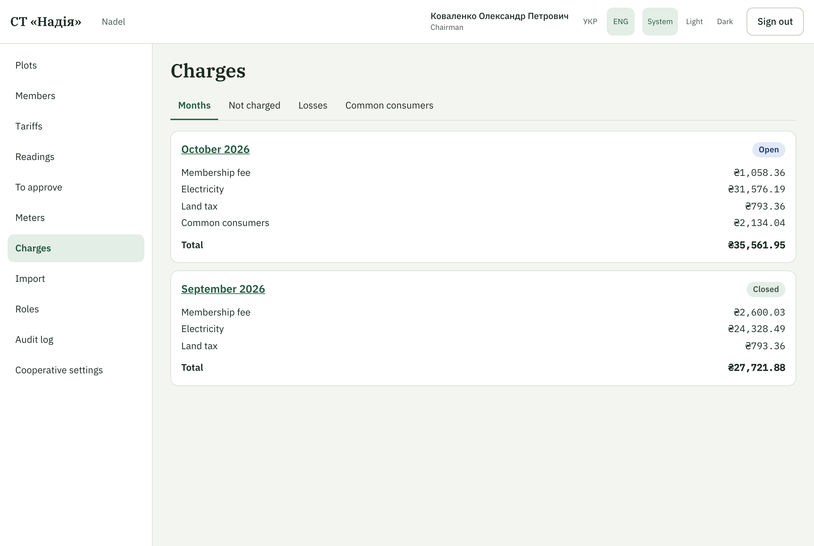
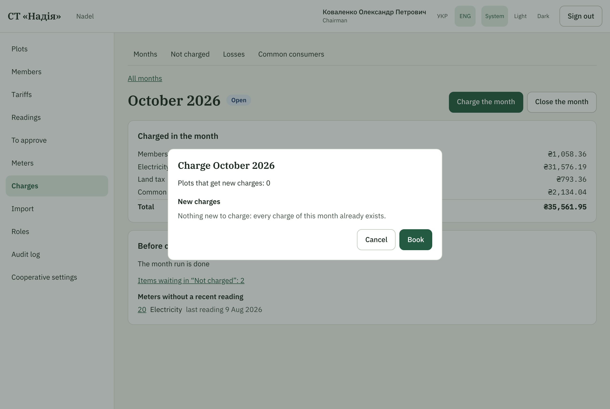
One list of everything the system could not charge, with the reason and a link to fix it: no tariff for every day, two tariffs on the same day, a plot outside every tariff, an unknown node or consumer value. "Retry" tries one item again; the next month run retries the tariff and reading items. An item disappears when the retry succeeds. Items never block closing a month.
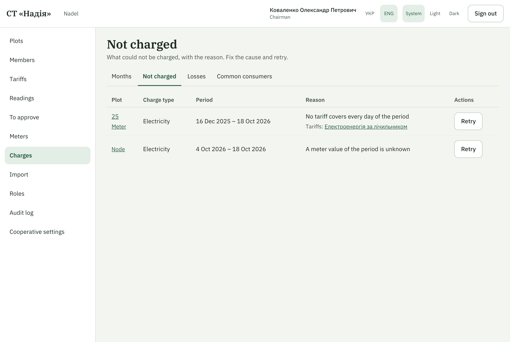
"Close the month" (permission "Close periods") shows the check list once more and asks to confirm. Only the earliest open month can be closed ("Close the earlier months first" otherwise). A closed month never changes; late entries go to the earliest open month.
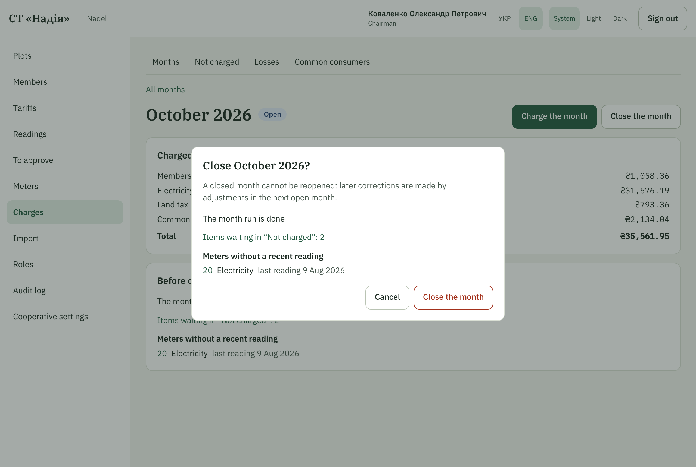
On the plot card the "Account" panel shows the debt per charge type and the charges, newest first, with a date filter. "Details" opens the calculation of a charge: kWh, rate, readings, days, the losses percentage. A charge booked later than the days it pays for reads "for 13.09–28.09, charged in October 2026".
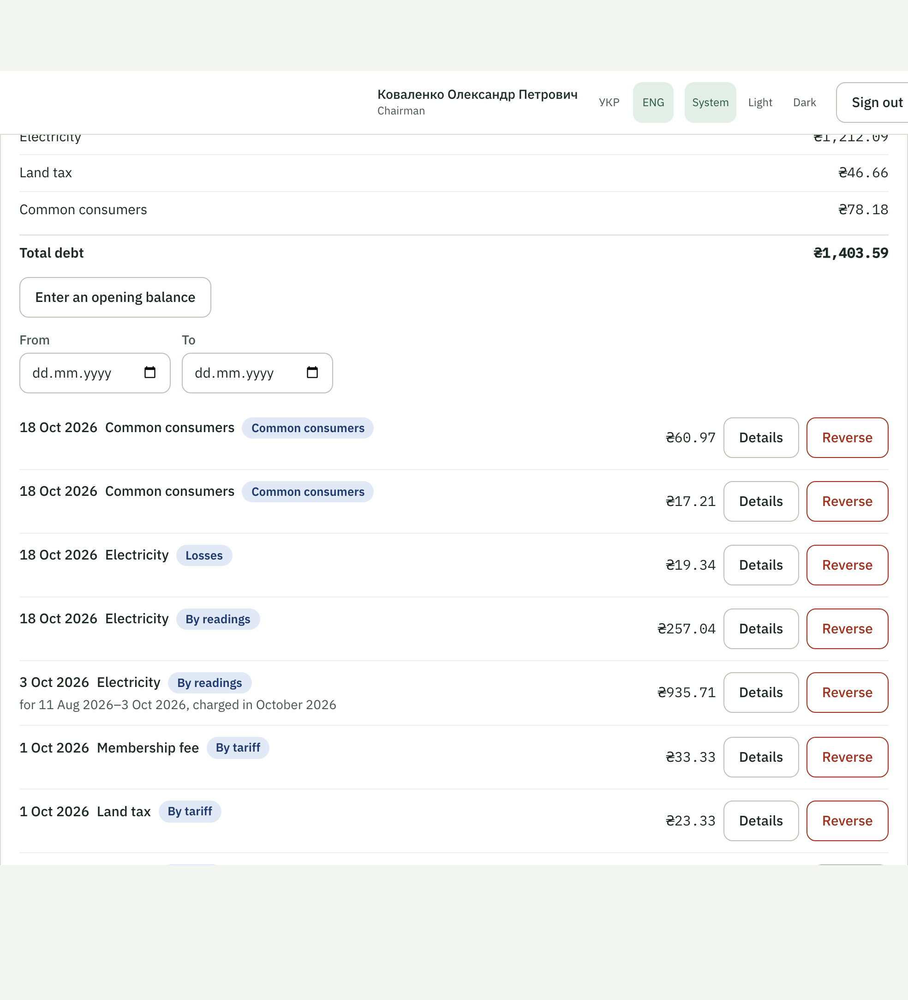
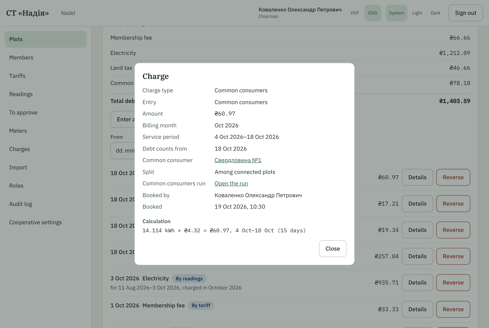
| Colour | When |
|---|---|
| Red | The debt reaches the "red from amount" or the oldest debt is at least "red from days" old |
| Yellow | Any other debt |
| Green | No debt |
| Grey | No owner, or common land |
The thresholds are set in "Cooperative settings" (defaults 1,000.00 ₴ and 90 days; the demo cooperative uses 2,000.00 ₴ and 90 days).
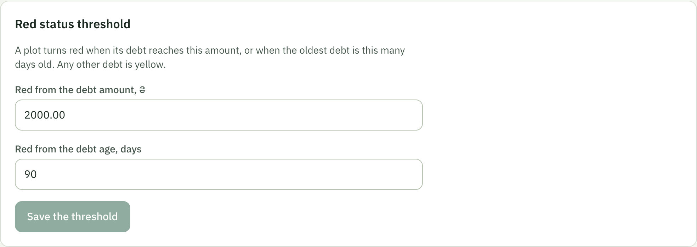
The treasurer sees months, accounts and the lists but has no buttons. A member sees only the account of their own plots under "My charges" (chapter 12), read-only, with the calculation of every charge; other plots' amounts are never shown.
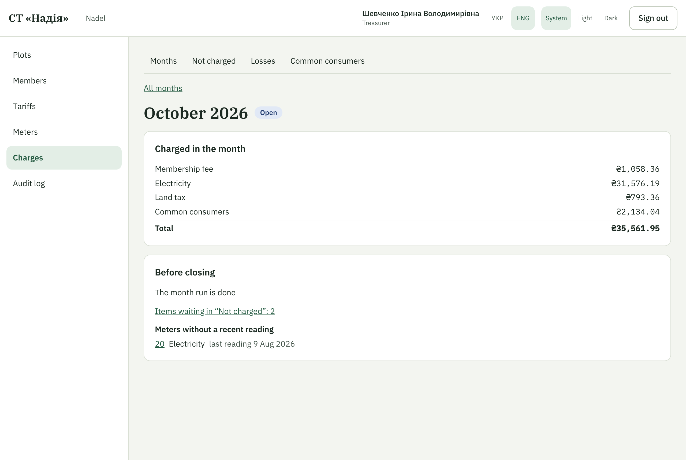
Quarter A: 1,100 kWh, plots P1 = 600 and P2 = 400 below it → losses 100: P1 60 kWh (259.20 ₴), P2 40 (172.80 ₴).
Quarter B: 1,050, plot P3 = 1,000 → losses 50 → P3.
Substation: 2,300; children A 1,100 + B 1,050 + well 50 = 2,200 → losses 100 shared 600 / 400 / 1,000 of 2,000: P1 30, P2 20, P3 50 kWh.
Well pumps, street lighting, the office. Their consumption is a separate charge type "Common consumers" with its own per-kWh tariff and its own board run. The split is chosen per consumer:
| Split | Who pays | Example |
|---|---|---|
| Connected plots | Plots connected to that well, for their connected days | Pump 60 kWh, three connected plots: 20 kWh each = 86.40 ₴; an unconnected plot nothing |
| Equally | Every active plot, with or without a meter | Lighting |
| Service users | The plots listed in the settings | Lighting 30 kWh, 3 plots: 10 each = 43.20 ₴ |
| Not charged | Nobody — covered by the membership fee | Shown in reports |
Both tabs of "Charges" work the same way: pick the range "From" and "To" (not later than today), press "Preview", read the table and warnings, then "Book" (permission "Run charges"). The booking is written in the month of the "To" day, or in the earliest open month after it. The history of past runs is below, with "Details" and "Reverse the run" (permission "Reverse charges", a reason is required).
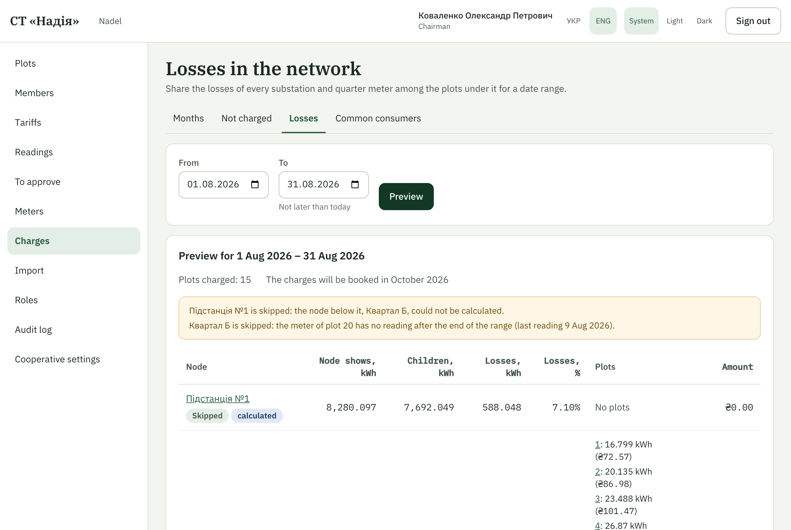
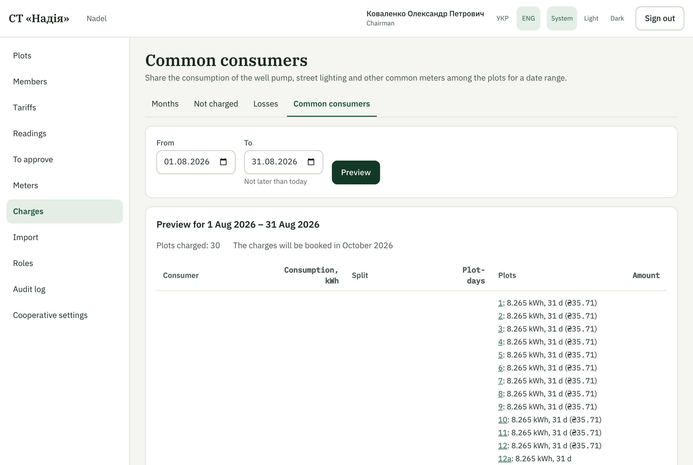
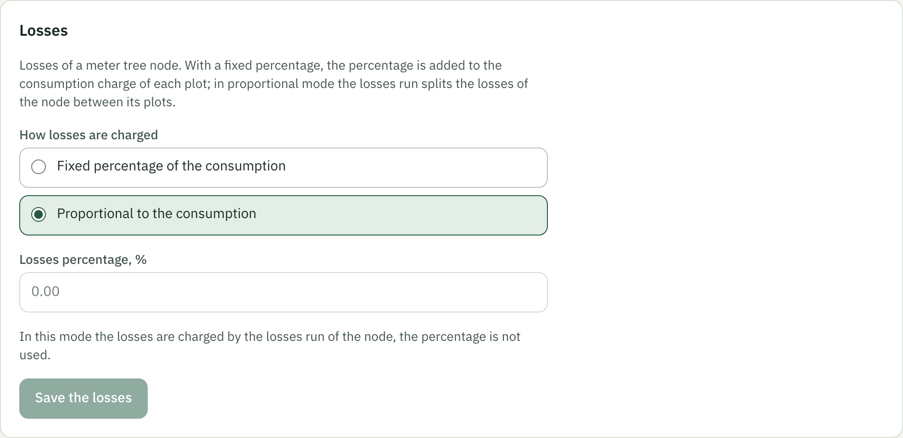
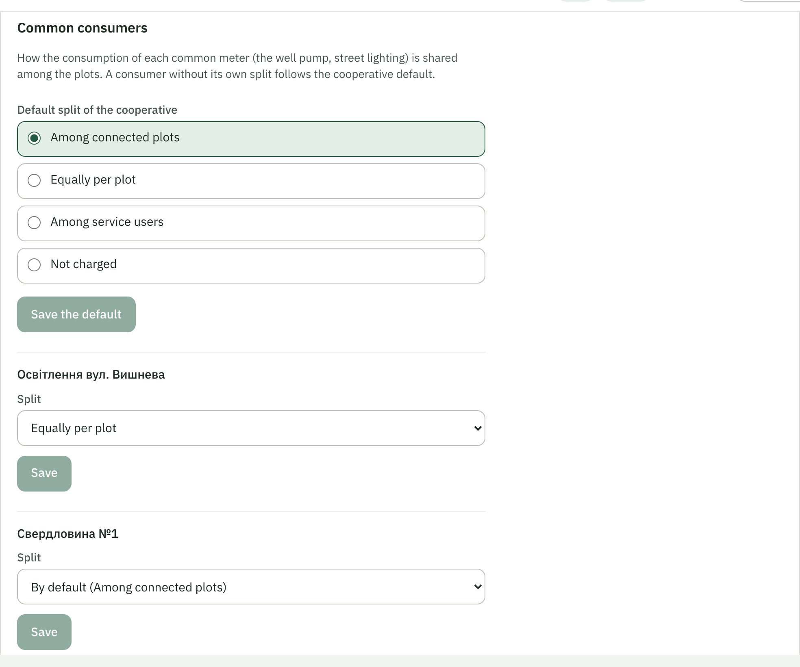
Water works like electricity: a plot not connected to the well pays nothing for water.
A plot's connection is on its card, panel "Water": "Connect" (source and the first connected day) and "Disconnect" (the last connected day); the history is listed below. Many plots at once are connected or disconnected on the "Water supply" section of "Cooperative settings", per source. Without a connection a plot is never queued in "Not charged" for water and pays nothing for it.
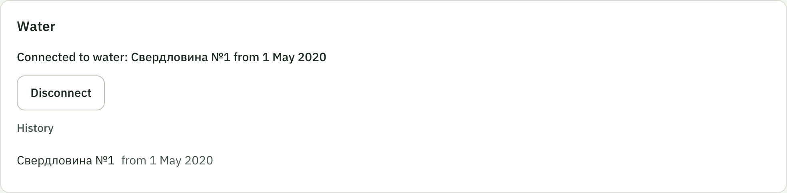
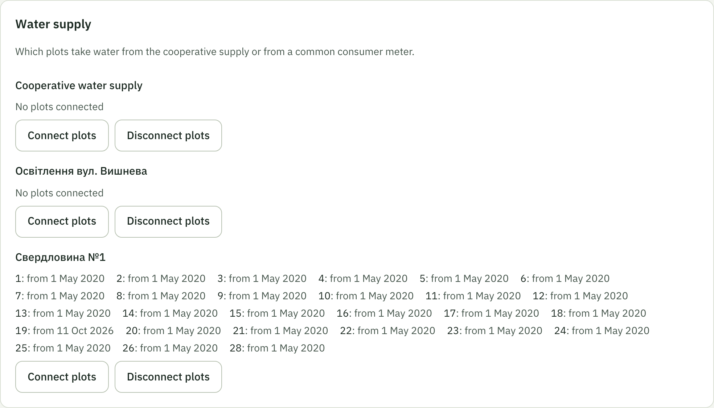
A back-dated tariff version, a correction of a used version or of a used reading — one mechanism:
From 1 September 60 ₴/sotka/year was entered by mistake instead of 50; a 6-sotka plot. September is closed, October open.
| Was | After the correction | |
|---|---|---|
| September (closed) | 30.00 | Unchanged; in October an adjustment −5.00 "for September" |
| October (open) | 30.00 | Reversal −30.00 and a new charge 25.00 |
| Total | 60.00 | 50.00; if 60.00 was paid, a prepayment of 10.00 |
${cooperative.name}, ${period.from} and rows
${rows.plots.number}; the system fills it in. The catalogue of all placeholders is on
the templates page.
| What | What it gives the board |
|---|---|
| Payments | Entering payments, a cash desk with receipts, bank statement import, allocation, prepayments. |
| Invoices and delivery | PDF invoices with the NBU QR code, no-debt certificates, delivery by email, Telegram, Viber. |
| Mobile app and map | An app for members and the electrician with photo readings; the cooperative map coloured by debt. |
This guide is updated with every new capability of the system.